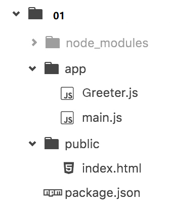
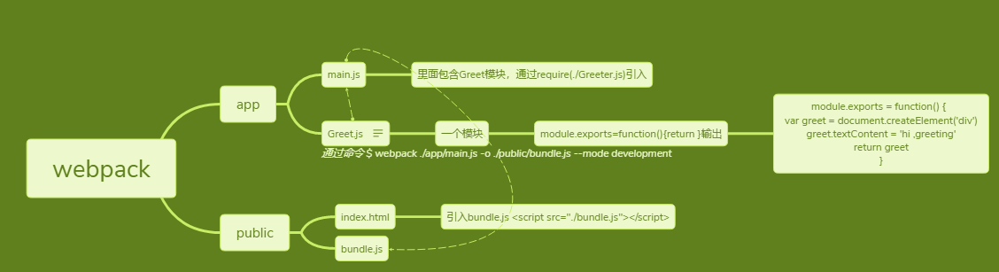

什么是Webpack
WebPack可以看做是模块打包机：它做的事情是，分析你的项目结构，找到JavaScript模块以及其它的一些浏览器不能直接运行的拓展语言（Scss，TypeScript等），并将其转换和打包为合适的格式供浏览器使用。
安装 进到你的项目文件夹下
//全局安装
npm install -g webpack
正式使用Webpack前的准备
在上述练习文件夹中创建一个package.json文件，这是一个标准的npm说明文件，里面蕴含了丰富的信息，包括当前项目的依赖模块，自定义的脚本任务等等。在终端中使用npm init命令可以自动创建这个package.json文件
npm init
输入这个命令后，终端会问你一系列诸如项目名称，项目描述，作者等信息，不过不用担心，如果你不准备在npm中发布你的模块，这些问题的答案都不重要，回车默认即可。
package.json文件已经就绪，我们在本项目中安装Webpack作为依赖包
// 安装Webpack
npm install --save-dev webpack
安装完后package.json里多了
"devDependencies": {
"webpack": "^4.35.2"
}
建文件，此时项目结构如下图所示
package.json要和node_module放一起 packgae.json要放最外层，webpack 插播一条
上传github有node_modules 要过虑掉这个文件夹 需要在.git这个目录的文件夹下建一个.gitignore文件，gitBash下
touch gitignore
内部写入:
node_modules/
更多gitignore配置详见：https://blog.csdn.net/jiandan1127/article/details/81205530
public/index.html <-----为了引入 <script src="bundle.js"></script>
Greeter.js中定义一个返回包含问候信息的html元素的函数,并依据CommonJS规范导出这个函数为一个模块
// Greeter.js
module.exports = function() {
var greet = document.createElement('div');
greet.textContent = "Hi there and greetings!";
return greet;
};
main.js文件中我们写入下述代码，用以把Greeter模块返回的节点插入页面。
//main.js
const greeter = require('./Greeter.js');
document.querySelector("#root").appendChild(greeter());
正式使用Webpack
webpack可以在终端中使用，在基本的使用方法如下：
# {extry file}出填写入口文件的路径，本文中就是上述main.js的路径，
# {destination for bundled file}处填写打包文件的存放路径
# 填写路径的时候不用添加{}
webpack {entry file} {destination for bundled file}
webpack app/main.js public/bundle.js (旧版，废弃)
提示装webpack-cli
npm i webpack-cli -g
npm i webpack-cli --save-dev
webpack ./app/main.js -o ./public/bundle.js --mode development
